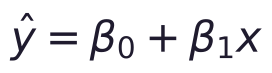
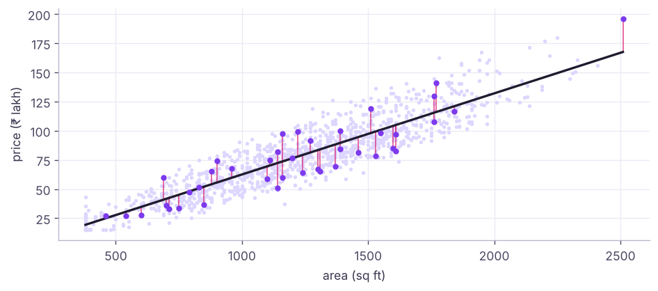
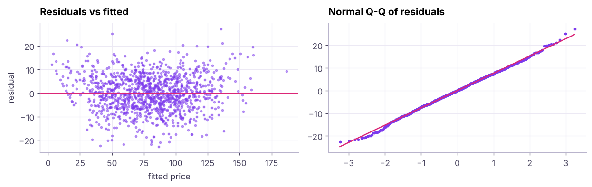

Linear Regression: Fitting, Interpreting, Assumptions and Diagnostics
Predict a number and explain it. Simple and multiple linear regression with ordinary least squares, interpreting coefficients, dummy variables and log targets, R², adjusted R², RMSE and MAE, the LINE assumptions and residual diagnostics, multicollinearity and VIF, outliers and influence, with statsmodels for inference and scikit-learn for prediction on the house-price data.
- Fit simple and multiple linear regression with statsmodels and scikit-learn
- Interpret intercepts, slopes, dummy variables and log-transformed coefficients
- Evaluate models with R², adjusted R², MAE, RMSE and MAPE on test data
- Check linearity, independence, normality and equal variance of residuals
- Detect multicollinearity with VIF and influential points with Cook's distance
Simple linear regression
Find the straight line that best predicts y from x:

Ordinary least squares (OLS) chooses β₀ and β₁ to minimise the sum of squared residuals, where a residual is actual − predicted.
import pandas as pd, numpy as np
import statsmodels.formula.api as smf
h = pd.read_csv("house_prices.csv").dropna(subset=["area_sqft"])
pps = h.price_lakh * 1e5 / h.area_sqft # price per sq ft
h = h[pps.between(pps.median() / 3, pps.median() * 3)] # drop 4 impossible prices (data-entry errors found in EDA)
print(len(h), "houses")
m1 = smf.ols("price_lakh ~ area_sqft", data=h).fit()
print(m1.params.round(4).to_dict(), "| R² =", round(m1.rsquared, 3))
b0, b1 = m1.params
print(f"price ≈ {b0:.2f} + {b1:.4f} × area → each extra 100 sq ft adds about ₹{100 * b1:.1f} lakh")
print("prediction for 1,500 sq ft:", round(m1.predict(pd.DataFrame({"area_sqft": [1500]}))[0], 1), "lakh")1171 houses
{'Intercept': -7.0873, 'area_sqft': 0.0696} | R² = 0.827
price ≈ -7.09 + 0.0696 × area → each extra 100 sq ft adds about ₹7.0 lakh
prediction for 1,500 sq ft: 97.3 lakh
Multiple linear regression
m2 = smf.ols("price_lakh ~ area_sqft + bedrooms + bathrooms + age_years + distance_to_center_km + parking + C(city)", data=h).fit()
print(m2.summary().tables[1])
print(f"R² {m2.rsquared:.3f} | adjusted R² {m2.rsquared_adj:.3f} | F-test p {m2.f_pvalue:.1e} | n = {int(m2.nobs)}")=========================================================================================
coef std err t P>|t| [0.025 0.975]
-----------------------------------------------------------------------------------------
Intercept 15.2624 1.057 14.446 0.000 13.190 17.335
C(city)[T.Chennai] -24.2893 0.625 -38.870 0.000 -25.515 -23.063
C(city)[T.Hyderabad] -15.6931 0.637 -24.641 0.000 -16.943 -14.444
C(city)[T.Pune] -20.0518 0.624 -32.122 0.000 -21.277 -18.827
area_sqft 0.0686 0.001 81.096 0.000 0.067 0.070
bedrooms 0.9105 0.555 1.641 0.101 -0.178 1.999
bathrooms -0.3698 0.472 -0.783 0.434 -1.296 0.557
age_years -0.4218 0.026 -16.187 0.000 -0.473 -0.371
distance_to_center_km -0.1990 0.037 -5.407 0.000 -0.271 -0.127
parking 0.5099 0.487 1.046 0.296 -0.446 1.466
=========================================================================================
R² 0.937 | adjusted R² 0.937 | F-test p 0.0e+00 | n = 1171Reading the output
| Column | Meaning |
|---|---|
coef |
Change in predicted price for +1 unit of the feature, holding the others constant |
std err |
Uncertainty of the coefficient |
t, P>|t| |
Test of H₀: coefficient = 0 |
[0.025 0.975] |
95% confidence interval |
C(city)[T.X] |
Dummy variable: difference from the reference city (the first alphabetically) |
coef = m2.params; ci = m2.conf_int()
for f in ["area_sqft", "age_years", "distance_to_center_km", "parking"]:
print(f"{f:22s} {coef[f]:+8.3f} lakh per unit (95% CI {ci.loc[f, 0]:+.3f} to {ci.loc[f, 1]:+.3f}), p = {m2.pvalues[f]:.3g}")
ref = sorted(h.city.unique())[0]
print(f"city effects vs {ref}:", {k.split('T.')[1][:-1]: round(v, 1) for k, v in coef.items() if k.startswith("C(city)")})area_sqft +0.069 lakh per unit (95% CI +0.067 to +0.070), p = 0
age_years -0.422 lakh per unit (95% CI -0.473 to -0.371), p = 2.69e-53
distance_to_center_km -0.199 lakh per unit (95% CI -0.271 to -0.127), p = 7.76e-08
parking +0.510 lakh per unit (95% CI -0.446 to +1.466), p = 0.296
city effects vs Bengaluru: {'Chennai': -24.3, 'Hyderabad': -15.7, 'Pune': -20.1}Coefficients are associations conditional on the other features, not proof that renovating (changing age) would cause that price change.
Log target: percentage effects
Prices are right-skewed and effects are often multiplicative. Modelling log(price) turns coefficients into approximate percentage effects.
m3 = smf.ols("np.log(price_lakh) ~ np.log(area_sqft) + bedrooms + bathrooms + age_years + distance_to_center_km + parking + C(city)", data=h).fit()
print(f"elasticity: +1% area → +{m3.params['np.log(area_sqft)']:.2f}% price | each year of age → {100 * (np.exp(m3.params['age_years']) - 1):+.2f}% | R² (log scale) {m3.rsquared:.3f}")elasticity: +1% area → +1.12% price | each year of age → -0.66% | R² (log scale) 0.927
Evaluating predictions
from sklearn.model_selection import train_test_split
from sklearn.metrics import mean_absolute_error, mean_squared_error, r2_score, mean_absolute_percentage_error
train, test = train_test_split(h, test_size=0.2, random_state=0)
fit = smf.ols("price_lakh ~ area_sqft + bedrooms + bathrooms + age_years + distance_to_center_km + parking + C(city)", data=train).fit()
p_train, p_test = fit.predict(train), fit.predict(test)
for name, yt, yp in [("train", train.price_lakh, p_train), ("test", test.price_lakh, p_test)]:
print(f"{name:5s} R² {r2_score(yt, yp):.3f} | MAE {mean_absolute_error(yt, yp):.2f} | RMSE {mean_squared_error(yt, yp) ** 0.5:.2f} | MAPE {100 * mean_absolute_percentage_error(yt, yp):.1f}%")train R² 0.938 | MAE 5.95 | RMSE 7.51 | MAPE 9.4% test R² 0.936 | MAE 6.47 | RMSE 8.06 | MAPE 10.7%
| Metric | Formula idea | Read as |
|---|---|---|
| MAE | mean |error| | Typical error in target units; robust |
| RMSE | √mean(error²) | Penalises large errors more |
| MAPE | mean |error| / actual | Percentage error; unstable near 0 |
| R² | 1 − SSE/SST | Share of variance explained (0–1 on test; can be negative) |
| Adjusted R² | R² penalised for number of features | Compare models with different feature counts |
Similar train and test scores mean the model generalises; a large gap signals overfitting.
Assumptions (LINE) and diagnostics
| Assumption | Meaning | Check | If violated |
|---|---|---|---|
| Linearity | Mean of y is linear in features | Residuals vs fitted: no curve | Transform, add polynomial terms, use trees |
| Independence | Errors not related to each other | Durbin-Watson ≈ 2; study design | Time-series models, clustered errors |
| Normality | Residuals ~ normal | Q-Q plot, histogram | Matters for small-sample inference; transform y |
| Equal variance | Constant spread of residuals | Residuals vs fitted: no funnel; Breusch-Pagan | log(y), robust (HC3) standard errors |

from statsmodels.stats.diagnostic import het_breuschpagan
from statsmodels.stats.stattools import durbin_watson
bp = het_breuschpagan(m2.resid, m2.model.exog)
print(f"Breusch-Pagan p = {bp[1]:.2e} ({'unequal variance (heteroscedastic)' if bp[1] < 0.05 else 'equal variance OK'}) | Durbin-Watson {durbin_watson(m2.resid):.2f} | residual skew {stats.skew(m2.resid):.2f}")
robust = smf.ols(m2.model.formula, data=h).fit(cov_type="HC3")
print("area_sqft p-value: ordinary", f"{m2.pvalues['area_sqft']:.2e}", "| robust HC3", f"{robust.pvalues['area_sqft']:.2e}")Breusch-Pagan p = 1.05e-01 (equal variance OK) | Durbin-Watson 1.99 | residual skew -0.05 area_sqft p-value: ordinary 0.00e+00 | robust HC3 0.00e+00
Multicollinearity
When features are strongly correlated with each other, coefficients become unstable and hard to interpret (predictions can still be fine).
from statsmodels.stats.outliers_influence import variance_inflation_factor
Xv = h[["area_sqft", "bedrooms", "bathrooms", "age_years", "distance_to_center_km", "parking"]].assign(const=1.0)
vif = pd.Series([variance_inflation_factor(Xv.values, i) for i in range(Xv.shape[1] - 1)], index=Xv.columns[:-1]).round(2)
print(vif.sort_values(ascending=False).to_dict())
print(h[["area_sqft", "bedrooms", "bathrooms"]].corr().round(2)){'bedrooms': 5.53, 'bathrooms': 4.09, 'area_sqft': 2.26, 'age_years': 1.01, 'distance_to_center_km': 1.01, 'parking': 1.0}
area_sqft bedrooms bathrooms
area_sqft 1.00 0.74 0.63
bedrooms 0.74 1.00 0.87
bathrooms 0.63 0.87 1.00VIF above about 5–10 signals a problem. Fixes: drop or combine correlated features, use regularisation (Ridge, lesson 12), or PCA.
Outliers and influential points
infl = m2.get_influence(); cooks = infl.cooks_distance[0]
top = np.argsort(cooks)[-3:][::-1]
print("largest Cook's distances:", cooks[top].round(3), "| threshold 4/n =", round(4 / len(h), 4))
print(h.iloc[top][["city", "area_sqft", "bedrooms", "price_lakh"]])largest Cook's distances: [0.011 0.009 0.009] | threshold 4/n = 0.0034
city area_sqft bedrooms price_lakh
464 Bengaluru 1780.0 3 162.4
113 Hyderabad 1430.0 2 66.8
863 Pune 470.0 1 37.3Investigate influential points: data errors should be fixed; genuine extremes may need robust methods (Huber regression) or separate treatment.
scikit-learn version
from sklearn.linear_model import LinearRegression
from sklearn.compose import make_column_transformer
from sklearn.preprocessing import OneHotEncoder
from sklearn.pipeline import make_pipeline
feats = ["area_sqft", "bedrooms", "bathrooms", "age_years", "distance_to_center_km", "parking", "city"]
pipe = make_pipeline(make_column_transformer((OneHotEncoder(drop="first"), ["city"]), remainder="passthrough"), LinearRegression())
pipe.fit(train[feats], train.price_lakh)
print(f"sklearn test R² {pipe.score(test[feats], test.price_lakh):.3f} (same model as statsmodels: {np.isclose(pipe.score(test[feats], test.price_lakh), r2_score(test.price_lakh, p_test))})")sklearn test R² 0.936 (same model as statsmodels: True)
Use statsmodels for inference (p-values, CIs, diagnostics) and scikit-learn for prediction pipelines, cross-validation and deployment.
Summary
- OLS minimises squared residuals; coefficients are the change in y per unit of x, holding other features constant.
- Dummy variables compare categories with a reference; log targets give percentage effects.
- Evaluate on test data with MAE, RMSE, MAPE and R²; adjusted R² penalises extra features.
- Check LINE assumptions with residual plots, Q-Q plots, Breusch-Pagan and Durbin-Watson; use robust standard errors or transformations when needed.
- VIF detects multicollinearity; Cook's distance finds influential points. Coefficients show association, not causation.
1. What does OLS minimise?
2. The coefficient of age_years is −0.6. Interpretation?
3. Residuals fan out as fitted values grow. Which assumption is violated?
4. What does a VIF of 12 indicate?
5. Test R² is 0.90 and train R² is 0.91. What does that suggest?
6. Why use a log target for prices?
(1) Add area_sqft:C(city) interaction: does the price per sq ft differ by city? (2) Compare test MAE of the plain and log-target models (back-transform with np.exp). (3) Remove the feature with the highest VIF and compare adjusted R². (4) Plot actual vs predicted on the test set.
Show solution
mi = smf.ols("price_lakh ~ area_sqft * C(city) + bedrooms + bathrooms + age_years + distance_to_center_km + parking", data=h).fit()
print(mi.params.filter(like="area_sqft:"))
lg = smf.ols("np.log(price_lakh) ~ area_sqft + bedrooms + bathrooms + age_years + distance_to_center_km + parking + C(city)", data=train).fit()
print(mean_absolute_error(test.price_lakh, np.exp(lg.predict(test))), mean_absolute_error(test.price_lakh, p_test))
m_novif = smf.ols("price_lakh ~ area_sqft + bathrooms + age_years + distance_to_center_km + parking + C(city)", data=h).fit(); print(m_novif.rsquared_adj, m2.rsquared_adj)
plt.scatter(test.price_lakh, p_test, s=6); plt.plot([0, 300], [0, 300])Q: What are the assumptions of linear regression? Linearity, independence of errors, normality of residuals (for inference), equal variance of residuals, and no perfect multicollinearity.
Q: R² vs adjusted R²? R² never decreases when you add features; adjusted R² penalises the number of features, so it can drop when a feature adds little.
Q: How do you interpret a coefficient in a log-log model? As an elasticity: a 1% change in x is associated with a β% change in y.
Practise more online
Free, trusted places to test yourself on this topic. Links open the original site in a new tab.